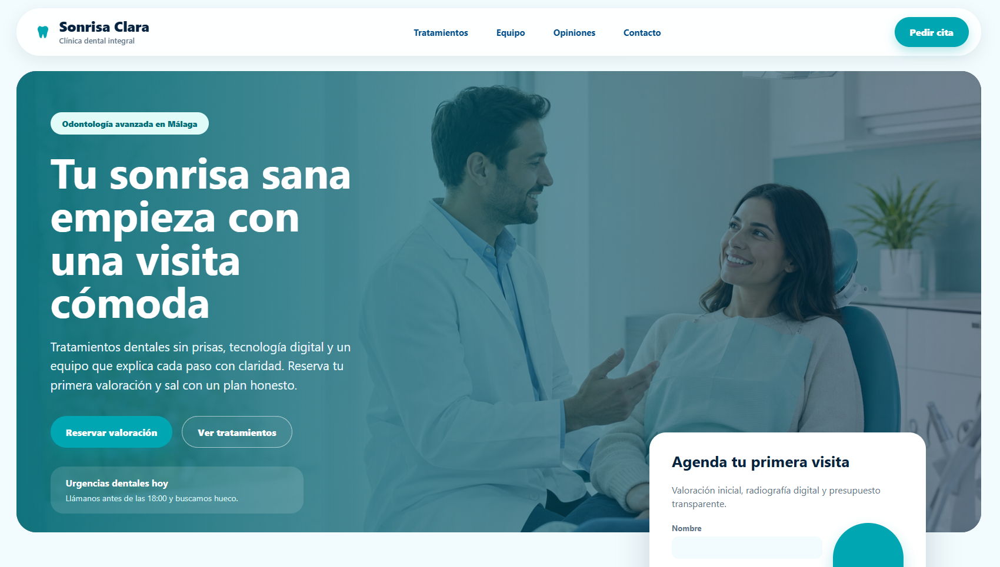

Ejemplo de web · clínica dental
Ejemplo de caso de web para clínica dental: clara, profesional y pensada para pedir cita.
Una propuesta completa para una clínica dental que necesita transmitir confianza desde el primer vistazo, explicar sus tratamientos con orden y convertir visitas en solicitudes de valoración.
Diagnóstico
Qué detecté antes de diseñar.
- La primera impresión podía transmitir más profesionalidad y tranquilidad.
- La solicitud de cita necesitaba estar más presente desde el primer vistazo.
- Los tratamientos podían agruparse de forma más escaneable.
- La ubicación y el contacto eran datos clave para reforzar confianza local.
Web completa
Un ejemplo de clínica dental preparado para vender confianza desde el primer scroll.
La web publicada muestra una primera pantalla más potente, navegación clara, botones de reserva, tratamientos ordenados y un formulario visible para facilitar la solicitud de cita.
Abrir clinicadental.uiverse.es
Decisiones UI/UX
Qué cambia y por qué importa.
Mensaje principal directo
El paciente entiende rápido dónde está, qué se ofrece y qué acción puede tomar.
CTA más visible
La llamada, WhatsApp y solicitud de cita pasan a ser acciones principales.
Servicios ordenados
Los tratamientos se agrupan para facilitar lectura y reducir sensación de desorden.
Confianza local
Ubicación, contacto y tono cercano aparecen antes para aumentar seguridad.